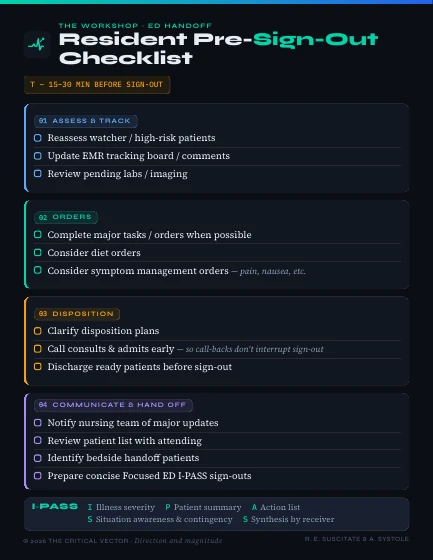
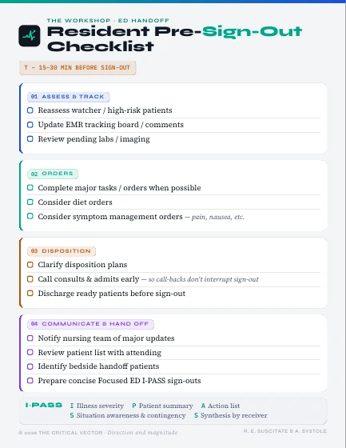
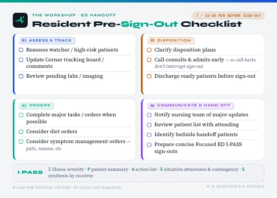
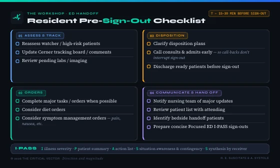
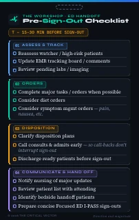
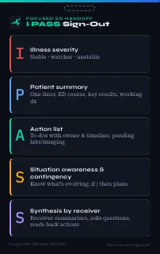

R. E. Suscitate & A. Systole · November 2026. Adapt the specifics, such as the tracking board, to your department.
Four steps for the 15–30 minutes before ED sign-out, with a Focused ED I-PASS key on the side. Free to print: four sizes, portrait or landscape, dark or light.






R. E. Suscitate & A. Systole · November 2026. Adapt the specifics, such as the tracking board, to your department.